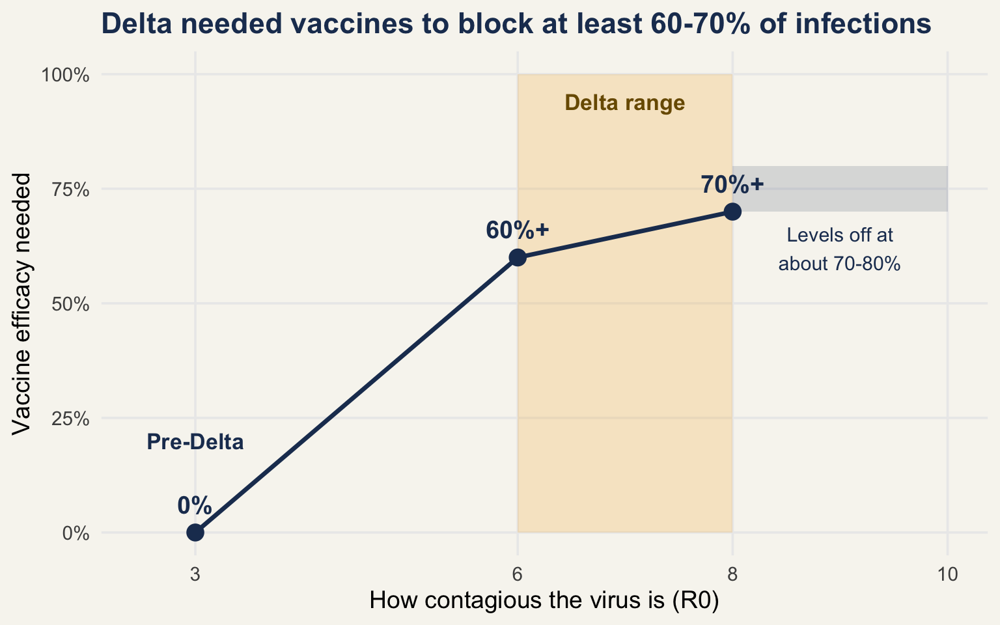

The problem: could quarantine keep working once Delta arrived?
For most of 2020 and 2021, Australia’s border strategy was simple. Keep the virus out, and put every arrival through 14 days of quarantine. It worked, but it came at a cost: stranded citizens, grounded airlines, and universities and tourism operators under heavy strain.
Then two things changed. Vaccines arrived, which raised the question of whether vaccinated travellers could skip some quarantine. And Delta arrived, a variant that spread more easily and was harder for vaccines to stop from infecting people. Together, these forced a hard question: how well would vaccines need to work, and how many people would need to be vaccinated, for quarantine-based reopening to stay safe?
Zachreson and colleagues (2022) built computer simulations to answer exactly that. This post explains what they found.
The evidence: a simulation built on real breach data
The study does not follow real patients. It simulates a quarantine facility holding 100 travellers for 14 days, with tests on days 3 and 12 and 20 vaccinated staff on site. A second model then estimates whether one escape from quarantine could grow into a community outbreak.
The simulation is grounded in real events. The authors calibrated it with publicly reported Australian quarantine breach data from covidlive.com.au, and they checked their assumptions with state health departments. They then ran it across a wide range of conditions: virus contagiousness from 1 to 10 and vaccine efficacy from 0% to 90%.
NoteThree terms you will see
- R0: how many people one infected person passes the virus to, on average. Higher means more contagious.
- Vaccine efficacy: how well a vaccine stops infection. 60% efficacy means it blocks 60 in every 100 infections.
- t50: the number of days until there is a 50-50 chance that an outbreak starts in the community.
What the evidence shows
A more contagious virus demands better vaccines. Before Delta, with an R0 of about 3, quarantine kept the risk of a breach at a baseline level with no vaccine protection needed. Delta’s R0 was in the range of 6 to 8. To hold the breach risk at that same baseline, vaccine efficacy had to rise above 60% at an R0 of 6 and above 70% at an R0 of 8 (Figure 1). Beyond an R0 of 8, the requirement levelled off at around 70 to 80%, partly because travellers are quarantined in small family groups, which limits spread inside the facility.
That finding explains why Delta mattered, but breaches also depend on how long the community stays protected. Quarantine will occasionally fail, so the second question is whether a failure turns into an outbreak. The authors measured this with t50. With no extra vaccine protection, a community outbreak had a 50% chance of starting within about 15 days. Vaccines with efficacy below roughly 60% changed little, even when many people were vaccinated. But once both efficacy and coverage passed 80%, t50 stretched beyond 1,000 days, more than 60 times longer (Table 1).
| Scenario | Time until an outbreak has a 50% chance of starting |
|---|---|
| Baseline: no extra vaccine protection | About 15 days |
| Vaccine efficacy below about 60% (even with many people vaccinated) | Very little change |
| Vaccine efficacy above 80% and more than 80% of people vaccinated | More than 1,000 days |
The pattern is a threshold, not a slope. Partial protection buys little, and strong protection buys a great deal. Real-world vaccines generally blocked Delta infection less well than the 80 to 90% range, which is why quarantine alone could no longer cover for gaps in community vaccination.
What this means
So, could quarantine keep working against Delta? Only with help. Delta lifted the vaccine efficacy needed to hold the line from 0% to somewhere above 60 to 70%, and a large safety margin needed both efficacy and coverage above 80%. Quarantine and vaccination worked as a pair, not as substitutes for each other.
For you as a reader, the takeaway is practical. When someone says vaccinated travellers can skip quarantine, ask what vaccine efficacy and coverage that claim assumes. The answer decides whether the plan is safe.
One caution applies throughout. These numbers come from a simulation, so they are only as reliable as its assumptions. The authors tested alternative assumptions, including shorter incubation periods and weaker infection control, but the model leaves out factors such as age and prior immunity. Treat the results as a guide to the size of the challenge, not exact predictions.
Reference
Zachreson, Cameron, Freya M. Shearer, David J. Price, et al. 2022. “COVID-19 in Low-Tolerance Border Quarantine Systems: Impact of the Delta Variant of SARS-CoV-2.” Science Advances 8 (14): eabm3624. https://doi.org/10.1126/sciadv.abm3624.